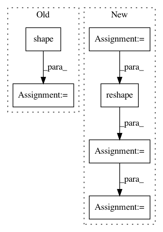

c7320c3b31fb300e6bab95b5a2e29212f332f2db,hypergan/samplers/batch_walk_sampler.py,BatchWalkSampler,sample,#BatchWalkSampler#Any#Any#,56
Before Change
sample = self._sample()
data = sample["generator"]
for i in range(np.shape(data)[0]):
sample_data = data[i:i+1]
self.plot(sample_data, path, save_samples)
time.sleep(0.018)
return []
def plot(self, image, filename, save_sample):
Plot an image.
After Change
gan = self.gan
z_t = gan.uniform_encoder.z
inputs_t = gan.inputs.x
self.step+=1
if(self.step >= len(self.steps)):
self.steps = self.regenerate_steps()
self.step=0
z = self.steps[self.step]
with gan.session.as_default():
z = np.reshape(z, [1, -1])
sample_data = gan.session.run(gan.generator.sample, feed_dict={z_t: z})
self.plot(sample_data, path, save_samples)
time.sleep(0.018)
return []
In pattern: SUPERPATTERN
Frequency: 5
Non-data size: 6
Instances
Project Name: HyperGAN/HyperGAN
Commit Name: c7320c3b31fb300e6bab95b5a2e29212f332f2db
Time: 2018-08-20
Author: mikkel@255bits.com
File Name: hypergan/samplers/batch_walk_sampler.py
Class Name: BatchWalkSampler
Method Name: sample
Project Name: deepmind/sonnet
Commit Name: bc08dbfbe77554bf3458529285003f0bf92eecd3
Time: 2018-07-17
Author: fviola@google.com
File Name: sonnet/python/modules/nets/vqvae.py
Class Name: VectorQuantizer
Method Name: _build
Project Name: tensorflow/models
Commit Name: 1ea84b7fa9a03781d22837f91683462d823202ea
Time: 2020-11-24
Author: gardener@tensorflow.org
File Name: research/object_detection/predictors/heads/class_head.py
Class Name: WeightSharedConvolutionalClassHead
Method Name: predict
Project Name: tensorflow/models
Commit Name: 1ea84b7fa9a03781d22837f91683462d823202ea
Time: 2020-11-24
Author: gardener@tensorflow.org
File Name: research/object_detection/predictors/heads/keras_class_head.py
Class Name: WeightSharedConvolutionalClassHead
Method Name: _predict
Project Name: deepmind/sonnet
Commit Name: bc08dbfbe77554bf3458529285003f0bf92eecd3
Time: 2018-07-17
Author: fviola@google.com
File Name: sonnet/python/modules/nets/vqvae.py
Class Name: VectorQuantizerEMA
Method Name: _build